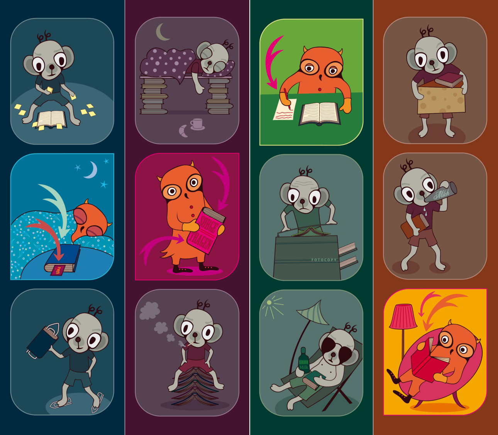
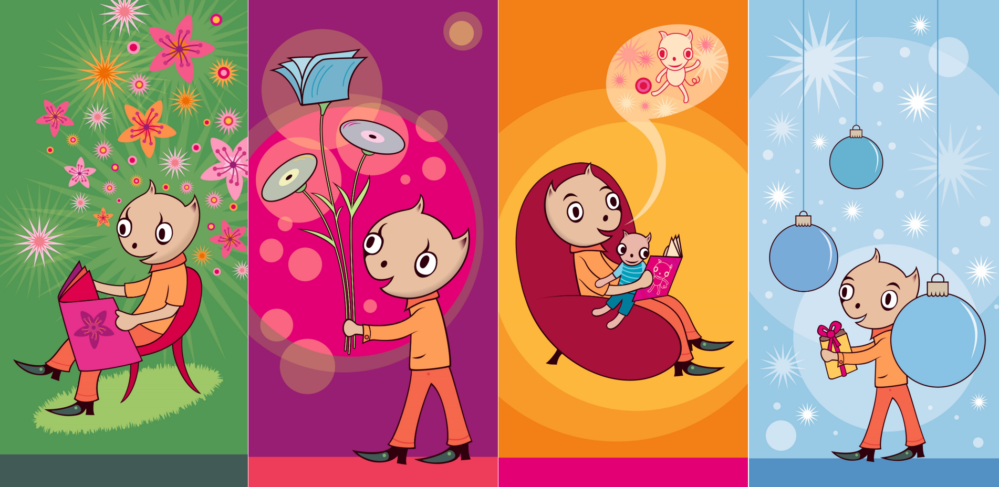

LIBREAS; Vielen Dank, dass Sie sich bereit erklärt haben, unsere Fragen zu beantworten. Wir haben gemerkt, dass eine ganze Anzahl von Designer*innen und Künstler*innen, wenn sie für Bibliotheken arbeiten, gerne als ein Symbol auf Tiere oder Pflanzen zurückgreifen. Uns interessiert, warum das so ist. Gleichzeitig wollen wir die Möglichkeit nutzen, um von ihrer Seite zu hören, wie eine solche Zusammenarbeit mit Bibliotheken abläuft.
Wann kamen Sie das erste Mal in Ihrer Arbeit mit Bibliotheken in Kontakt? Hatte das bei Ihnen Vorläufer
, beispielsweise eigene Erfahrungen aus der Kindheit?
JZ: Es war die Bibliothek meiner Kindheit, also von meinem Wohnquartier, die mich für einen Vortrag über meine Illustrationsarbeit eingeladen hat.
LIBREAS: Wie kam der Kontakt für diese beiden bibliotheksspezifischen Projekte zustande? Sind Sie mit Ideen auf die Einrichtungen zugegangen oder kamen die zu ihnen? War das der normale Weg, wie solche Projekte zustande kommen oder eher ungewöhnlich?
JZ: Ich wurde von der jeweiligen Bibliothek angefragt, was mich eigentlich der ganz übliche Weg ist.
LIBREAS: Unterscheiden sich für Sie als Designerin Bibliotheken als Kund*innen von anderen Einrichtungen?
JZ: Ja, am Anfang von meiner Arbeit als Grafikerin und Illustratorin war noch alles analog. Das bedeutet, dass ich für Vorlagen oder Informationen zu bestimmten Themen sehr auf die Bibliotheken angewiesen war.
LIBREAS: Wir haben, wenn wir ehrlich sind, wenig Ahnung von einem solchen Design-Prozess. Wie gehen Sie allgemein vor, um zu Motiven für solche Arbeiten zu gelangen? Und wie sind Sie bei dieser konkreten Arbeit zu diesen Motiven gelangt?
JZ: Für die Lesezeichen für die Schweizerische Nationalbibliothek sass ich mit der Projektverantwortlichen zusammen. Sie wollte vier Motive von mir, die Leser*innen auf künstlerische, freundliche und witzige Art darauf aufmerksam machen, dass sie zu den Büchern Sorgfalt tragen müssen.
Die Vorgaben für die Darstellung waren, dass
man die Bücher nicht kopieren soll, sondern abschreiben,
man keine klebenden oder zum Beispiel metalligen Lesezeichen wie Büroklammern verwenden soll, sondern nur Lesezeichen aus Papier,
man die Bücher nicht für andere als buchtypische Zwecke verwenden soll
man beim Lesen nicht essen und trinken soll.
Die Idee der Bibliothek war, dass jedes Jahr so eine Serie mit vier Lesezeichen von jeweils einer anderen Künstler*in gestaltet wird. Ich war die Erste. Die Lesezeichen waren ein Erfolg, aber die Serie wurde leider nicht fortgesetzt.

Für die Kornhausbibliotheken in Bern durfte ich vier Postkarten gestalten :
zwei Geschenkgutscheine (Weihnachtsmotiv und Ganzjahresmotiv)
zwei Varianten eines Gutschein Buchstart-Pakets für Eltern zur Geburt ihres Kindes.
Auch hier sass ich mit der Bibliotheksleiterin für ein gemeinsames Brainstorming zusammen und wir haben ein Brainstorming gemacht. Danach entwarf ich die Karten als Bleistiftzeichnungen. Die Kundin war von Beginn an zufrieden und ich habe die Reinzeichnung im Programm Adobe Illustrator gemacht.
Das Vorgehen ähnelte sich also bei beiden Aufträgen.

LIBREAS: Stachen diese beiden Projekte für Sie heraus aus Ihrem sonstigen Schaffen oder würden Sie die eher als typisch für Ihre Projekte ansehen?
JZ: Eigentlich sind es sehr typische Aufträge von mir. Das Thema Bibliothek fand ich sehr schön und ich hatte bei beiden Aufträgen viele Freiheiten. Daher waren es besonders schöne Aufträge.
LIBREAS: Welche Ziele hatten, Ihrer Meinung nach, die Bibliotheken konkret mit den Projekten? Gab es besondere Herausforderungen zum Beispiel seitens der Bibliotheksleitungen?
JZ: Die Botschaft der Nationalbibliothek lautet: Übt Sorgfalt mit den Büchern. Den Kornhausbibliotheken ging es um die Leseförderung und den Gebrauch der Volksbibliothek durch Kindern und mit den allgemeinen Geschenkgutscheinen auch durch ein breites Publikum.
Die Zusammenarbeit mit den zuständigen Personen (beim zweiten Auftrag war es die Bibliotheksleitung) war sehr toll und es gab keine Probleme.
LIBREAS: Sie haben eine spezifisch anthropomorphe Form der Tiere gewählt – die Tiere sind eher Menschen als richtige Tiere
. Das machen auch andere Designer*innen und Künstler*innen. Denken Sie, nur so sind Tiere und Bibliotheken miteinander zu verbinden? Passen Tiere als solche sonst nicht zu Bibliotheken?
JZ: In meinen Illustrationen kommen solche Tiermenschen häufig vor. Mir gefällt diese Form um mich auszudrücken und etwas darzustellen sehr. Ich finde, bei dieser Bildsprache schaut das Zielpublikum eher hin, als wenn es ganz menschliche Figuren wären. Und ja, bei Tiere als solchen
würde der Bezug zur Bibliothek vielleicht schon fehlen.
LIBREAS: Welche konkrete Rolle spielten die von Ihnen gewählten Tiere bei der Realisierung des Projektes?
JZ: Bei meinen Lesezeichen habe ich mich von der Eule mit den Eigenschaften der Weisheit, Einsicht, des freundlichen Äusseren für die gute
Figur und für die Leseratte mit der Zuschreibung des Schmutzigen inspirieren lassen. Ich habe also auch mit bekannten Stereotypen der Eule und der Ratte gespielt. Und doch soll die Leseratte unbedingt auch eine sympathische Figur sein, sie ist wissensbegierig, aktiv, kreativ, liest draussen am Strand, etc. Dies sollte sie aber eben mit den Bibliotheksbüchern nicht machen, woran eine Leser*in beim Benutzen des Lesezeichens erinnert wird.
Für mich war es ideal, die Botschaft mit diesen beiden Tieren zu vermitteln.
LIBREAS: Welche Erfahrungen nehmen Sie aus den Projekten für die Zusammenarbeit mit Bibliotheken mit? Würden Sie anderen Designer*innen raten, auch solche Projekte durchzuführen oder eher nicht?
JZ: Ja, ich würde anderen dazu raten. Es war eine sehr schöne Arbeit, die ich sofort wieder machen würde. Die Erfahrung war, dass ein breites Publikum auf meine Arbeit aufmerksam wurde.
Judith Zaugg (*1970) Grafikerin und Buchherstellerin. Lebt und studierte in Bern. Zahlreiche Ausstellungen, Stipendien und Preise in der Schweiz, Deutschland und darüber hinaus. Zahlreiche Kinder- und Bildbücher und weitere eigene Publikationen sowie Veröffentlichungen in deutschen und schweizerischen Medien. https://www.judithzaugg.ch, info@judithzaugg.ch